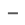

확대 / 축소
X축

Y축
원본
맵차트의 크기를 변경할 수 있습니다.
setChartScale 함수를 이용하여 X, Y 축의 중심을 기준으로 확대 축소가 됩니다.
"맵 원본 크기" 클릭시 SVG 원본의 크기로 변경됩니다.
위의 버튼으로 확인해 보실 수 있습니다.
자세한 사항은 아래의 Source 탭을 참조하시기 바랍니다.
Layout과 Data를 수정 후 적용 할 수 있습니다.
Source
Layout
Data
수정적용